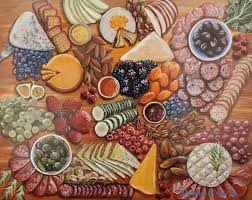

Hello! I'm Kamarra Tookes, a student learning HTML, CSS, and web design. I created this website as part of my final project for Coding 1. I enjoy creating visually pleasing websites and improving my skills with each project. My goals include learning JavaScript and eventually building full-stack web applications. Outside of coding, I enjoy gardening, cooking/baking, playing basketball, and doing a lot of diy projects. I also love food, which is why I made this website.